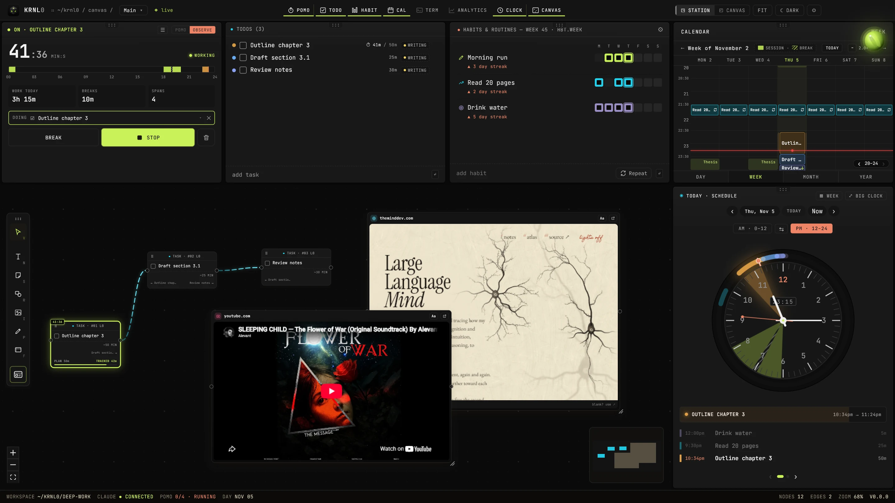
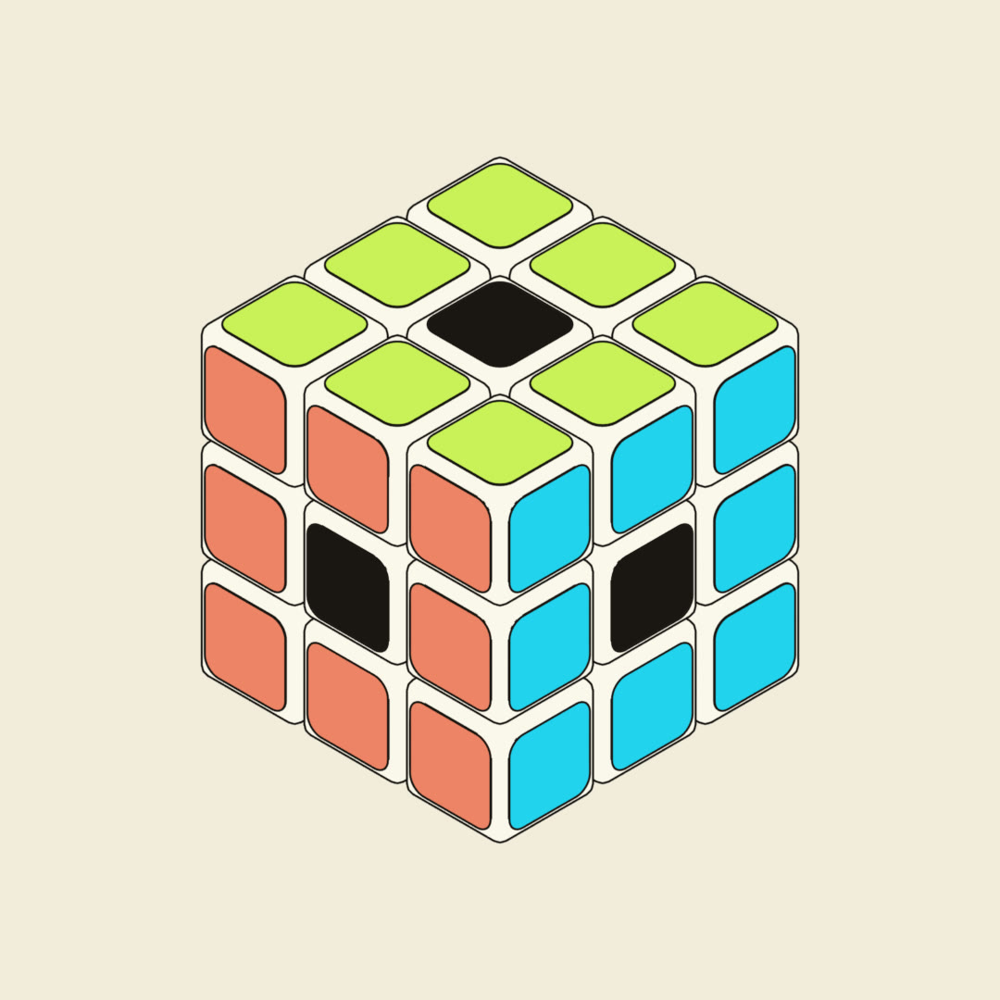

Timer
A timer that just watches.
Observe mode simply records what you are doing. Press start, name it, and the minutes land on that task. Switch to Pomodoro for the 25-minute rhythm.
Seven apps, one canvas
timerto-doshabitscalendarclockradioanalytics
One screen holds the whole day. Point at a part of the tray and see where it lives in the real app.
TimerIt records what you are doing, minute by minute.

Timer
Observe mode simply records what you are doing. Press start, name it, and the minutes land on that task. Switch to Pomodoro for the 25-minute rhythm.
To-dos
Each to-do carries its estimate and a tag. Check it off, and the time you actually spent stays with it.
Habits
Morning run, reading, water. One tap a day and the week fills in; the streak counts itself.
Calendar
Tasks chain together, so dropping the first one on Thursday lines the whole afternoon up behind it.
Clock
Plans, focus time and breaks around a real clock face, with what comes next listed underneath.
no
sign‑up
Your timer, your list, your habits and your calendar usually live in four apps that never talk. In KRNL0 they share one canvas: start the timer and the minutes go to the task, tick a habit and the week fills in, move a task and the rest of the day follows.
Pick rain, fire, synth or noise, or paste any YouTube link for your own music. In the app you can layer several at once. Keep favourites one tap away. The player floats over your day and tucks into the edge when you are done.
The real Ambient Radio. Pick a sound, press play.
Everything you juggled in separate tabs, in one place that knows how they fit together. Scroll, and watch them fold in.
 KRNL0
KRNL0
0 of 9 in one place · free · on your computer
This is how a chain works in KRNL0. Drag the first task along your day, or tap it and use the arrow keys. The next two line up behind it.
Start simple and get shown around: an Easy mode, a guide that talks you through your first day, and plans, habits and events on one board.
Yes. KRNL0 costs nothing: no subscription, no trial, no account. The code is public, so anyone can see how it works, and every release becomes fully open source two years after it ships.

Free for Windows. Download it, open it, and today is planned in a minute.